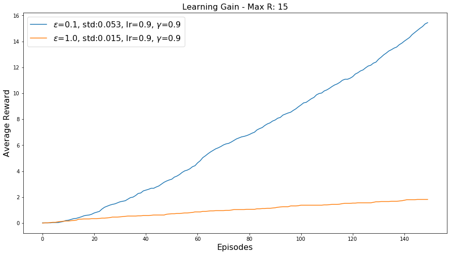
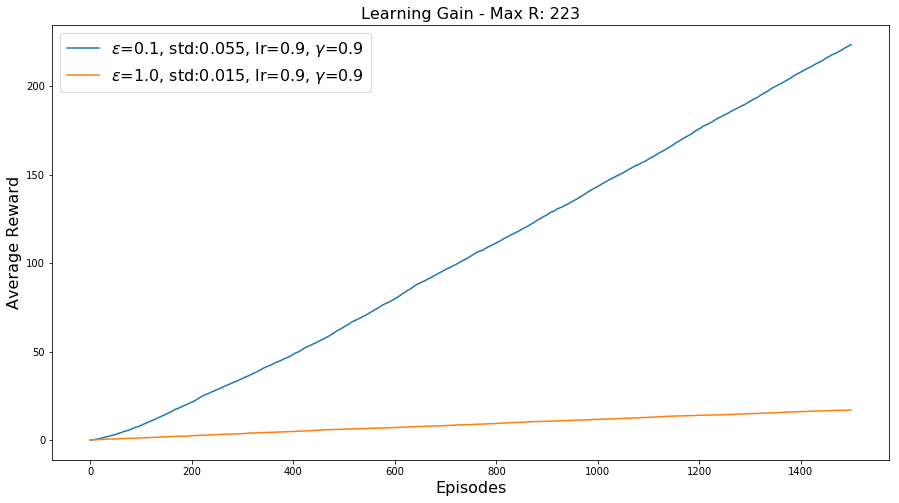
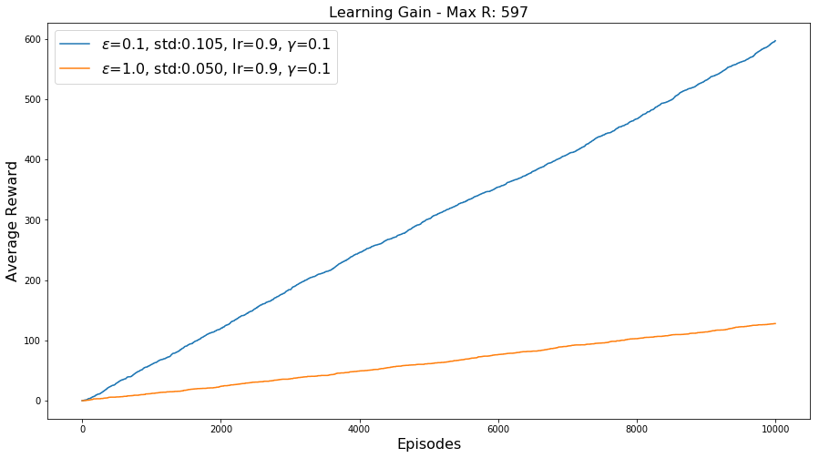
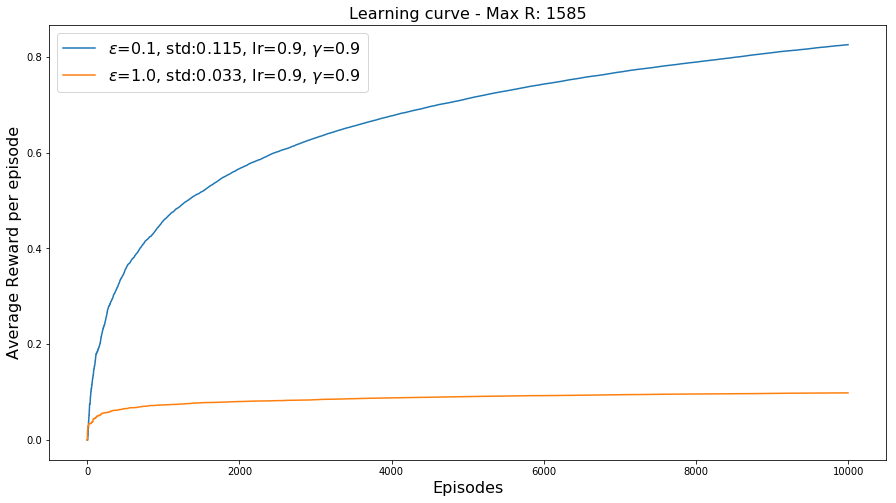
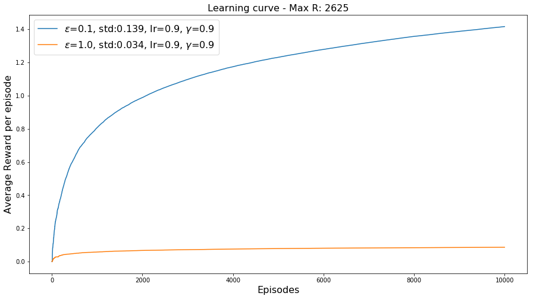
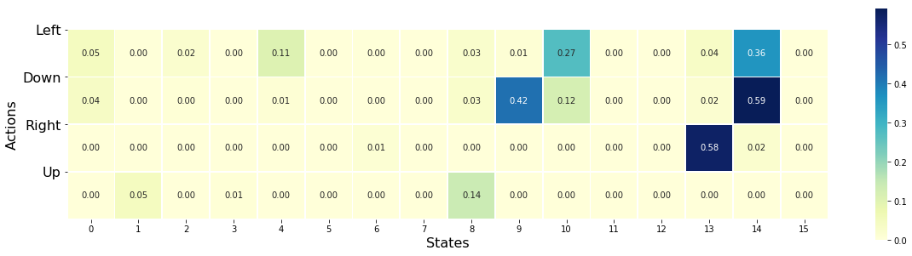

import random
from random import randint
import pandas as pd
import numpy as np
import gym
import matplotlib.pyplot as plt
import seaborn as sns
Helper functions¶
Reward and reward per episode¶
def var(N,episodes,epsilon,alpha,gamma):
M = np.zeros((N,episodes))
Mre=np.zeros((N,episodes))
for n in range(N):
_,R,_,_,_,Rf,_ = FL_play(episodes=episodes,epsilon=epsilon,alpha=alpha,gamma=gamma)
M[n] = Rf
Mre[n] = R
return np.mean(M,axis=0),np.mean(Mre,axis=0)
def plot_average_rewards_per_episode(N,episodes,epsilon,alpha,gamma):
M,Mre = var(N,episodes=episodes,epsilon=epsilon,alpha=alpha,gamma=gamma)
Mr,Mrer = var(N,episodes=episodes,epsilon=1.0,alpha=alpha,gamma=gamma)
plt.figure(figsize=(15,8))
plt.plot(range(M.shape[0]),np.cumsum(M),label="$\epsilon$=0.1, std:{:.3f}, lr={:.1f}, $\gamma$={:.1f}".format(np.std(Mre),alpha,gamma))
plt.plot(range(Mr.shape[0]),np.cumsum(Mr),label="$\epsilon$=1.0, std:{:.3f}, lr={:.1f}, $\gamma$={:.1f}".format(np.std(Mrer),alpha,gamma))
plt.title('Learning curve - Max R: {:.0f}'.format(sum(Mre)),fontsize=16)
plt.xlabel('Episodes',fontsize=16)
plt.ylabel('Average Reward per episode',fontsize=16)
plt.legend(loc=0,fontsize=16)
plt.show()
def plot_average_rewards(N,episodes,epsilon,alpha,gamma):
M,Mre = var(N,episodes=episodes,epsilon=epsilon,alpha=alpha,gamma=gamma)
Mr,Mrer = var(N,episodes=episodes,epsilon=1.0,alpha=alpha,gamma=gamma)
plt.figure(figsize=(15,8))
plt.plot(range(M.shape[0]),np.cumsum(Mre),label="$\epsilon$=0.1, std:{:.3f}, lr={:.1f}, $\gamma$={:.1f}".format(np.std(Mre),alpha,gamma))
plt.plot(range(Mr.shape[0]),np.cumsum(Mrer),label="$\epsilon$=1.0, std:{:.3f}, lr={:.1f}, $\gamma$={:.1f}".format(np.std(Mrer),alpha,gamma))
plt.title('Learning Gain - Max R: {:.0f}'.format(sum(Mre)),fontsize=16)
plt.xlabel('Episodes',fontsize=16)
plt.ylabel('Average Reward',fontsize=16)
plt.legend(loc=0,fontsize=16)
plt.show()
Q-Network¶
def var_q(N,episodes,epsilon,alpha,gamma):
M = np.zeros((env.observation_space.n, env.action_space.n))
for n in range(N):
Q,_,_,_,_,_,_ = FL_play(episodes=episodes,epsilon=epsilon,alpha=alpha,gamma=gamma)
M += Q
return M / N
def var_qnetwork(N,episodes,epsilon,alpha,gamma):
Q = var_q(N,episodes=episodes,epsilon=epsilon,alpha=alpha,gamma=gamma)
plt.figure(figsize=(20,5))
sns.heatmap(Q.T,annot=Q.T,linewidths=.75,cmap="YlGnBu",square=True, fmt=".2f")
plt.xlabel('States',fontsize=16)
plt.ylabel('Actions',fontsize=16)
plt.plot('Q-network value')
plt.yticks((0,1,2,3),('Left','Down','Right','Up'),rotation=0,fontsize=16)
plt.show()
Gym - Frozen Lake¶
env = gym.make('FrozenLake-v0')
---------------------------------------------------------------------------
KeyError Traceback (most recent call last)
~/anaconda3/lib/python3.8/site-packages/gym/envs/registration.py in spec(self, path)
157 try:
--> 158 return self.env_specs[id]
159 except KeyError:
KeyError: 'FrozenLake-v0'
During handling of the above exception, another exception occurred:
DeprecatedEnv Traceback (most recent call last)
/tmp/ipykernel_36230/582203357.py in <module>
----> 1 env = gym.make('FrozenLake-v0')
~/anaconda3/lib/python3.8/site-packages/gym/envs/registration.py in make(id, **kwargs)
233
234 def make(id, **kwargs):
--> 235 return registry.make(id, **kwargs)
236
237
~/anaconda3/lib/python3.8/site-packages/gym/envs/registration.py in make(self, path, **kwargs)
126 else:
127 logger.info("Making new env: %s", path)
--> 128 spec = self.spec(path)
129 env = spec.make(**kwargs)
130 return env
~/anaconda3/lib/python3.8/site-packages/gym/envs/registration.py in spec(self, path)
183 ]
184 if matching_envs:
--> 185 raise error.DeprecatedEnv(
186 "Env {} not found (valid versions include {})".format(
187 id, matching_envs
DeprecatedEnv: Env FrozenLake-v0 not found (valid versions include ['FrozenLake-v1'])
SARSA¶
def policy(Q,state,epsilon):
if np.random.rand() < epsilon:
action = np.random.choice([0,1])
else:
action = np.argmax(Q[state,:])
return action
def FL_play(episodes,epsilon,alpha,gamma):
Q = np.random.rand(env.observation_space.n, env.action_space.n)*0.0001
R = []
Rf = []
for i in range(episodes):
state = env.reset()
r = 0
action = policy(Q,state,epsilon)
while True:
next_state,reward,done,_ = env.step(action)
next_action = policy(Q,next_state,epsilon)
r+=reward
if done:
Q[state,action] = (1-alpha)*Q[state,action] + alpha*reward
break
else:
Q[state,action] = (1-alpha)*Q[state,action] + alpha*(reward +gamma*Q[next_state,next_action])
state = next_state
action = next_action
R.append(r)
Rf.append(r/(i+1))
return Q,R,epsilon,alpha,gamma,Rf,L
%%time
plot_average_rewards(N=50,episodes=150,epsilon=0.1,alpha=0.9,gamma=0.9)

CPU times: user 3.95 s, sys: 381 ms, total: 4.33 s
Wall time: 3.74 s
%%time
plot_average_rewards(N=50,episodes=1500,epsilon=0.1,alpha=0.9,gamma=0.9)

CPU times: user 37.2 s, sys: 501 ms, total: 37.7 s
Wall time: 37.1 s
%%time
plot_average_rewards(N=5,episodes=10000,epsilon=0.1,alpha=0.9,gamma=0.1)

CPU times: user 18.1 s, sys: 601 ms, total: 18.7 s
Wall time: 17.9 s
%%time
plot_average_rewards_per_episode(N=10,episodes=10000,epsilon=0.1,alpha=0.9,gamma=0.9)

CPU times: user 49.2 s, sys: 545 ms, total: 49.8 s
Wall time: 49.1 s
%%time
plot_average_rewards_per_episode(N=10,episodes=10000,epsilon=0.05,alpha=0.9,gamma=0.9)

CPU times: user 56.8 s, sys: 831 ms, total: 57.6 s
Wall time: 56.7 s
%%time
var_qnetwork(N=5,episodes=20000,epsilon=0.1,alpha=0.9,gamma=0.95)

CPU times: user 32.8 s, sys: 600 ms, total: 33.4 s
Wall time: 32.6 s